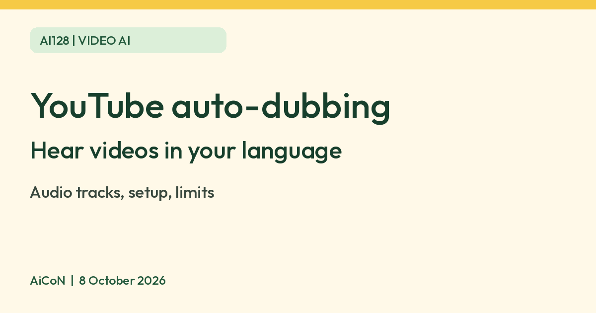

YouTube auto-dubbing: watch videos in your own language
YouTube says creators can have automatic dubbing add translated audio tracks to their videos. As a viewer, you can pick a preferred audio language or switch the audio track on a single video. Dubbed videos are marked as auto-dubbed.

What it is
YouTube's help page says automatic dubbing generates translated audio tracks in different languages. Videos with these tracks are marked "auto-dubbed" in the video description.
Set your preferred language
- Open your profile picture, then Settings.
- Go to Playback and performance.
- Under Language, choose add or edit languages.
- Pick your languages and confirm.
YouTube says content whose original audio is already in one of your preferred languages is not translated.
Switch audio on one video
- Open the video.
- Tap or click Settings in the player.
- Choose Audio track.
- Pick the language you want.
This only works if the video offers other languages.
Which languages
YouTube's table lists, for example, English videos dubbed into Hindi, Malayalam, Tamil, Telugu, Bengali and Punjabi, and Hindi, Malayalam, Tamil, Telugu videos dubbed into English. Some pairs differ, so check the table.
Limits to know
- It is a creator-side feature, so a video only has a dub if one was generated and published.
- Machine dubbing can mistranslate names, jokes and technical terms. Use captions when accuracy matters.
- YouTube says dubs may also be generated over time for older videos, so availability changes.
- We did not test it ourselves and quote no price.
Frequently asked questions
How do I know a video is dubbed?
YouTube says such videos are marked as auto-dubbed in the description.
Can I go back to the original voice?
Yes. Open Settings, then Audio track, and choose the original.
Sources: Use automatic dubbing, Watch videos in your preferred language. Checked 8 October 2026.